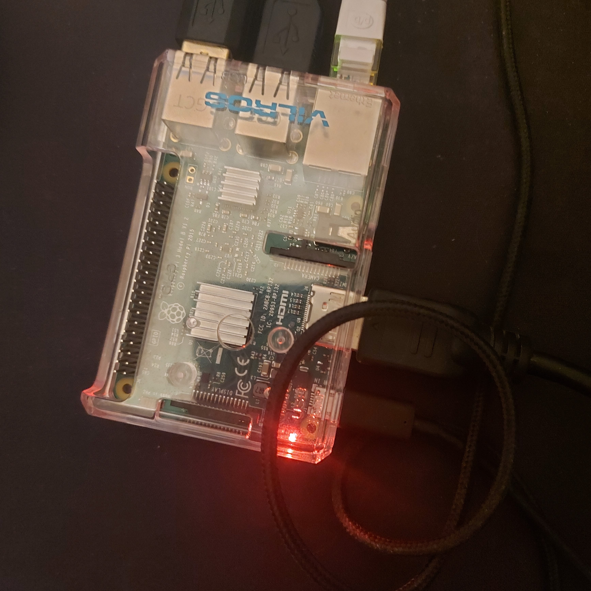
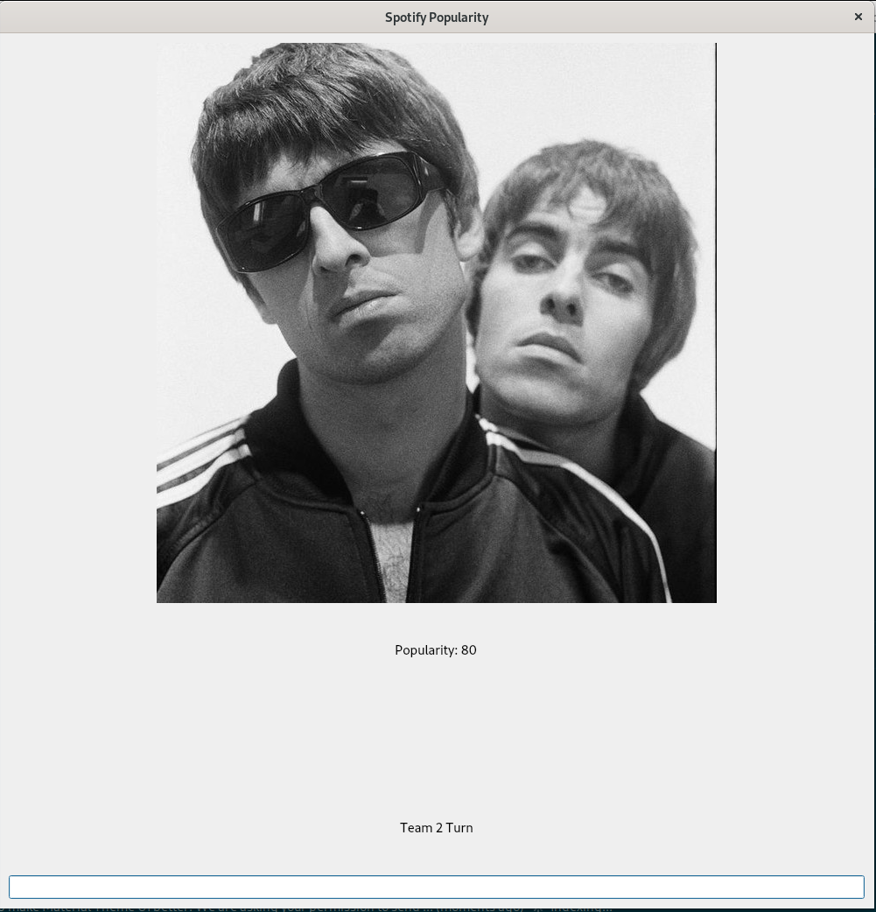
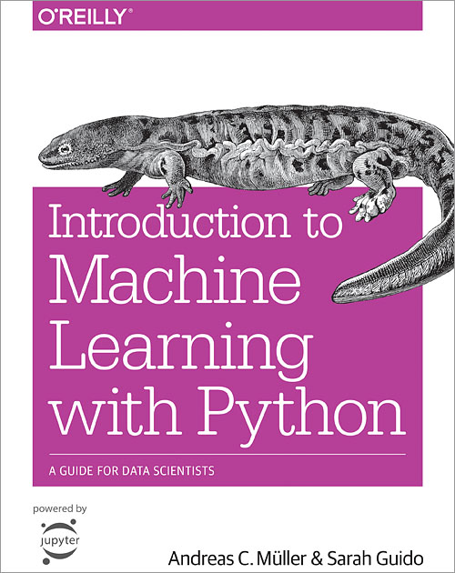

This week I created my very own web server on the Raspberry PI. This was quite easy to be honest and I initally did this expecting to host this blog on the webserver using WordPress. However I soon realised that it would not be feasible as I have a dynamic IP address. I am therefore instead hosting this blog on GitHub pages which I am happy to say costs me nothing at all, and as the typical Yorkshire man I apparently am this makes me very happy.
At the start of the week I did not plan to create a web server or a blog. But in isolation I did not want to become lazy and just watch endless boxsets. At the start of the week I decided I would revise the Python programming language. In this week I made a very ugly application using the Spotify API and the PyQT GUI library. The point of the game was to have two users play against each other and each user would have to enter a music artist more popular than the previous one the user entered, a bit like the game bogies. This game had a fundamental floor that the user could simply enter the most popular artist and the second user could therefore never win. However as the main purpose of the application was to become more familiar with Python I was not too bothered about this.
Once I had learnt enough about Python to start to create project I begain reading Introduction to Machine Learning With Python. So far I have not read much of this book as I have been messing around with this blog. But so far I have implemented the K-means clustering algorthm using the Iris plant dataset.
Once I finish this book I plan to implement a simple logistic regression algorithm to predict whether a football team won a game based on the possession, number of corners and other statistics about the game. I expect this to be incredibly inaccurate as if I've learnt anything from watching Leeds United play you can have 80% possession, 20+ shots on goal yet still lose to a 10 man Wigan.
That is all for this week. I might post again later if I have done anything of signficiance since writing this page.